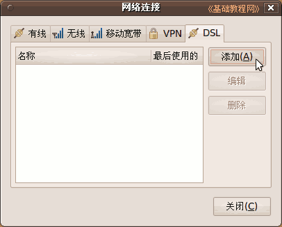
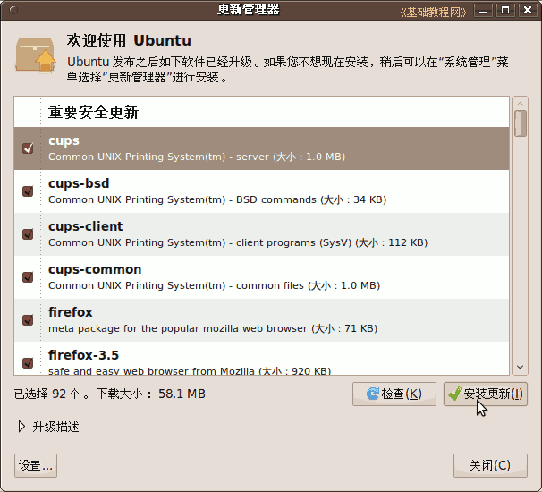
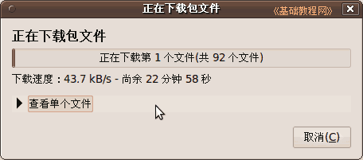

Ubuntu安装基础教程
作者：TeliuTe 来源：基础教程网
十六、安装Ubuntu9.10 返回目录 下一课9.10 版安装与前面版本类似，学习中遇到不清楚的地方，可以参考一下前面的内容，操作中注意细心，下面来看一个练习；
1、进入 live cd 桌面
1）设置好启动后，重启动计算机，可以用硬盘启动，也可以刻成光盘启动，下载地址：
进入后找蓝色链接点击下载，如 PC (Intel x86) desktop CD：http://cn.releases.ubuntu.com/9.10/
2）启动后稍等，在出来的列表中，用方向键选择中文(简体)，按回车键进入继续；
3）在出来的安装菜单里，按回车键，进入第一项“试用 Ubuntu”，耐心等待进入桌面；
4）再等一会就进入一个桌面，这就是试用的 live cd 桌面，桌面左上边有有两个图标，右上角是“关机”按钮；
5）对于硬盘安装，点左上角菜单： Application－Accessories－Terminal 进入终端，中文是“应用程序－附件－终端”；
6）输入命令 sudo umount -l /isodevice 然后按一下回车键，没什么提示就是成功了；
2、安装系统
1）双击桌面“安装Ubuntu9.10”图标，稍等出来一个“欢迎”面板，点右下角“前进”按钮继续；
2）第2步是询问所在地，默认选的是中国(上海)，这些可以安装好了再调整，直接点“前进”按钮继续；
3）接下来第3步是询问键盘布局，检查一下是 China 或者 USA，直接点“前进”按钮即可；
前面这三步都可以选默认的直接前进，第四步分区开始要细致耐心；
4）在第4步出来的分区面板里，选择下边的“手动”，点“前进”继续；
5）新建分区和覆盖安装可以参考前面的第7、13、15课，这儿是安装到预留的ntfs分区上，
点击选中预留的分区，注意看清大小，然后点下边的“删除”按钮；
6）删除以后，这个分区就变成一个“空闲”或者空白分区，点下面的“添加”按钮；
7）在出来的对话框中，设定新建分区的容量，留上1G(1024MB)等会给交换分区，在“挂载点”右边点一下，选 /，其他用默认，
注意，/ 分区不超过10G，如果分区容量大，可以再建一个 /home分区；
8）回到分区面板，再选中剩下的1G，继续点下面的“添加”，这次的挂载点选“交换空间”，点确定返回；
9）检查一下各个分区都编辑好了，点“前进”继续；

10）出来一个个人信息面板，依次输入自己的用户名、密码、计算机名，然后点“前进”继续，密码可以记到一个本子上；
11）如果提示密码太简单，可以换一个，或者点“继续”仍然使用，出来一个小结面板，下面提示那些分区要被格式化，
如果有Windows双系统，不想破坏原来的引导记录，可以点右下角的“高级”，把引导程序装到别的分区，参考前面课程；
12）检查好确认无误，点右下角的“安装”按钮，开始安装；
13）耐心等待完成，然后出来一个对话框，点“现在重启”完成安装；
14）稍等提示取出光盘，然后按回车键，重新启动计算机，安装完成；
3、连网换源
１）重新启动后，停在一个登录界面，点击自己的用户名，输入密码后按回车，或点“Log in”键，进入系统；
2）进入桌面后会出来一个“不完整语言支持”的提示对话框，先不关闭拖到一边后面要用；
3）先连网，找到屏幕右上角喇叭旁边的一个网络图标，瞄准点右键，选“编辑连接...”；
4）对于ADSL拨号宽带连接上网，在出来的对话框右边，点 DSL 标签，然后点添加；

5）在出来的对话框里，先打勾上边的 “自动连接，然后在用户名里输入ADSL宽带用户名，
下面的密码里，输入宽带密码，然后点右下角的“应用”按钮，在出来的密码框中输入密码；
关闭对话框以后，重新启动计算机(Restart)，就可以上网了，命令行使用 sudo pppoeconf 命令也可以；
(下面是局域网的，宽带用户不要设置)
6）如果是局域网上网，在出来的对话框里，选中点“Auto eth0”，点右边的“编辑...”按钮；
7）在出来的对话框里，选择 IPV4 设置标签，在下面的方法里选“手动”，再点下边的“添加”按钮，
在出来的文本框里，依次输入 IP 地址、子网掩码、网关，然后按回车键确定，在下面的 DNS 里输入 DNS 服务器地址，
检查一下，点右下角的“应用”按钮，在出来的认证中，输入自己的密码；
回到原来对话框点“关闭”，重新启动计算机就可以上网了；
8）连接好网络后先换源，点左上角菜单“Applications － Accessories － Terminal”，打开终端窗口；
输入命令，按回车键后，先输入自己登录的密码，密码不显示，盲打输入后再按回车键，这是备份命令
sudo cp /etc/apt/sources.list /etc/apt/sources.list_backup
再输入命令，按回车键
sudo gedit /etc/apt/sources.list
在出来的文本编辑器窗口中，先删除所有内容，再复制下面的这一组源进去，这是新疆用的，其他请参考第9课；
deb http://ubuntu910.jiupianzi.com/ubuntu/ karmic main restricted
deb-src http://ubuntu910.jiupianzi.com/ubuntu/ karmic main restricted
deb http://ubuntu910.jiupianzi.com/ubuntu/ karmic-updates main restricted
deb-src http://ubuntu910.jiupianzi.com/ubuntu/ karmic-updates main restricted
deb http://ubuntu910.jiupianzi.com/ubuntu/ karmic universe
deb-src http://ubuntu910.jiupianzi.com/ubuntu/ karmic universe
deb http://ubuntu910.jiupianzi.com/ubuntu/ karmic-updates universe
deb-src http://ubuntu910.jiupianzi.com/ubuntu/ karmic-updates universe
deb http://ubuntu910.jiupianzi.com/ubuntu/ karmic multiverse
deb-src http://ubuntu910.jiupianzi.com/ubuntu/ karmic multiverse
deb http://ubuntu910.jiupianzi.com/ubuntu/ karmic-updates multiverse
deb-src http://ubuntu910.jiupianzi.com/ubuntu/ karmic-updates multiverse
保存关闭，回到终端窗口，再执行下面命令，这是更新源；
sudo apt-get update
4、更新系统
1）回到最开头的“不完整语言支持”对话框，如果没了就点上边的菜单“System－Administration－Language Support”，都选择“汉语”，点左下角的“Run this action now”；
2）在出来的“The language support..”不完整语言支持对话框中，点“Install”，安装语言包；
3）然后开始下载语言包，耐心等待下载完成，然后接着安装这些包；
4）待语言包安装完成后，点Close和叉关闭各个对话框中；
5）过一会还会出来更新管理器对话框，点安装更新按钮；

6）然后在出来的密码框中，输入自己的密码，点确定；
7）接下来就是下载和安装，这儿耐心等待即可；

8）安装完成后，关闭对话框，点右上角的关机按钮，再点“Restart”重启动电脑；
9）重新启动后，菜单和程序就是中文的了；
本节学习了安装 ubuntu 9.10 的基本方法，如果你成功地完成了练习，请继续学习下一课内容；
本教程由86团学校TeliuTe制作|著作权所有
基础教程网：http://teliute.org/
美丽的校园……
|
|
|
|
|
|
转载和引用本站内容，请保留作者和本站链接。